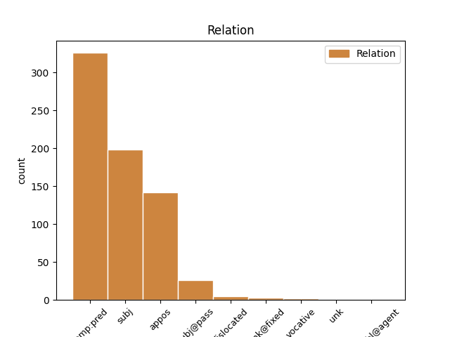
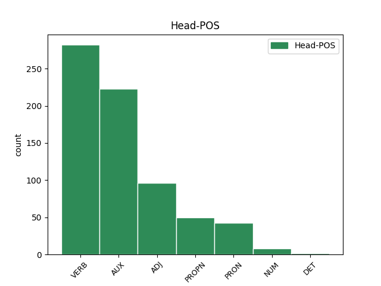
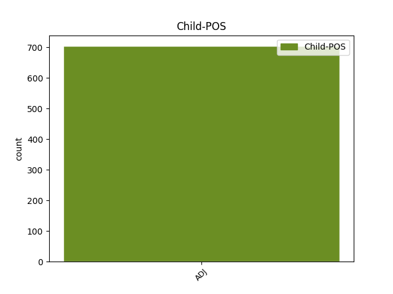

Distribution of features within this leaf



Agreement Rules sorted by frequency.
- When the dependent token is the predicative complements(comp:pred) of the head token, and the head token is AUX and the dependent token is ADJ.
1 ἰδοὺ _ _ _ _ 0 _ _ _
2 καὶ _ _ _ _ 0 _ _ _
3 τὰ _ _ _ _ 0 _ _ _
4 πλοῖα _ _ _ _ 0 _ _ _
5 τηλικαῦτα τηλικοῦτος ADJ Pd Case=Nom|Gender=Neut|Number=Plur 6 comp:pred _ ref=JAS_3.4
6 ὄντα εἰμί AUX V- Case=Nom|Gender=Neut|Number=Plur|Tense=Pres|VerbForm=Part|Voice=Act 0 _ _ _
7 καὶ _ _ _ _ 0 _ _ _
8 ὑπὸ _ _ _ _ 0 _ _ _
9 ἀνέμων _ _ _ _ 0 _ _ _
10 σκληρῶν _ _ _ _ 0 _ _ _
11 ἐλαυνόμενα _ _ _ _ 0 _ _ _
12 μετάγεται _ _ _ _ 0 _ _ _
13 ὑπὸ _ _ _ _ 0 _ _ _
14 ἐλαχίστου _ _ _ _ 0 _ _ _
15 πηδαλίου _ _ _ _ 0 _ _ _
16 ὅπου _ _ _ _ 0 _ _ _
17 ἡ _ _ _ _ 0 _ _ _
18 ὁρμὴ _ _ _ _ 0 _ _ _
19 τοῦ _ _ _ _ 0 _ _ _
20 εὐθύνοντος _ _ _ _ 0 _ _ _
21 βούλεται _ _ _ _ 0 _ _ _
1 καὶ _ _ _ _ 0 _ _ _
2 ἄλλος _ _ _ _ 0 _ _ _
3 ἄγγελος _ _ _ _ 0 _ _ _
4 ἐξῆλθεν _ _ _ _ 0 _ _ _
5 ἐκ _ _ _ _ 0 _ _ _
6 τοῦ _ _ _ _ 0 _ _ _
7 ναοῦ _ _ _ _ 0 _ _ _
8 τοῦ _ _ _ _ 0 _ _ _
9 ἐν _ _ _ _ 0 _ _ _
10 τῷ _ _ _ _ 0 _ _ _
11 οὐρανῷ _ _ _ _ 0 _ _ _
12 ἔχων ἔχω VERB V- Case=Nom|Gender=Masc|Number=Sing|Tense=Pres|VerbForm=Part|Voice=Act 0 _ _ _
13 καὶ _ _ _ _ 0 _ _ _
14 αὐτὸς αὐτός ADJ Pd Case=Nom|Gender=Masc|Number=Sing 12 subj _ ref=REV_14.17
15 δρέπανον _ _ _ _ 0 _ _ _
16 ὀξύ _ _ _ _ 0 _ _ _
1 καὶ _ _ _ _ 0 _ _ _
2 εἶδον _ _ _ _ 0 _ _ _
3 τὸν _ _ _ _ 0 _ _ _
4 οὐρανὸν _ _ _ _ 0 _ _ _
5 ἠνεῳγμένον _ _ _ _ 0 _ _ _
6 καὶ _ _ _ _ 0 _ _ _
7 ἰδοὺ _ _ _ _ 0 _ _ _
8 ἵππος _ _ _ _ 0 _ _ _
9 λευκός _ _ _ _ 0 _ _ _
10 καὶ _ _ _ _ 0 _ _ _
11 ὁ _ _ _ _ 0 _ _ _
12 καθήμενος _ _ _ _ 0 _ _ _
13 ἐπ’ _ _ _ _ 0 _ _ _
14 αὐτὸν _ _ _ _ 0 _ _ _
15 καλούμενος καλέω VERB V- Case=Nom|Gender=Masc|Number=Sing|Tense=Pres|VerbForm=Part|Voice=Pass 0 _ _ _
16 πιστὸς πιστός ADJ A- Case=Nom|Degree=Pos|Gender=Masc|Number=Sing 15 comp:pred _ ref=REV_19.11
17 καὶ _ _ _ _ 0 _ _ _
18 ἀληθινός _ _ _ _ 0 _ _ _
19 καὶ _ _ _ _ 0 _ _ _
20 ἐν _ _ _ _ 0 _ _ _
21 δικαιοσύνῃ _ _ _ _ 0 _ _ _
22 κρίνει _ _ _ _ 0 _ _ _
23 καὶ _ _ _ _ 0 _ _ _
24 πολεμεῖ _ _ _ _ 0 _ _ _
1 οὐαὶ _ _ _ _ 0 _ _ _
2 οὐαί _ _ _ _ 0 _ _ _
3 ἡ _ _ _ _ 0 _ _ _
4 πόλις _ _ _ _ 0 _ _ _
5 ἡ _ _ _ _ 0 _ _ _
6 μεγάλη _ _ _ _ 0 _ _ _
7 Βαβυλὼν Βαβυλών PROPN Ne Case=Nom|Gender=Fem|Number=Sing 0 _ _ _
8 ἡ _ _ _ _ 0 _ _ _
9 πόλις _ _ _ _ 0 _ _ _
10 ἡ _ _ _ _ 0 _ _ _
11 ἰσχυρά ἰσχυρός ADJ A- Case=Nom|Degree=Pos|Gender=Fem|Number=Sing 7 appos _ ref=REV_18.10
1 ὅτι _ _ _ _ 0 _ _ _
2 μόνος μόνος ADJ A- Case=Nom|Degree=Pos|Gender=Masc|Number=Sing 3 subj _ ref=REV_15.4
3 ὅσιος ὅσιος ADJ A- Case=Nom|Degree=Pos|Gender=Masc|Number=Sing 0 _ _ _
1 οὐ _ _ _ _ 0 _ _ _
2 γὰρ _ _ _ _ 0 _ _ _
3 εἰς _ _ _ _ 0 _ _ _
4 χειροποίητα _ _ _ _ 0 _ _ _
5 εἰσῆλθεν _ _ _ _ 0 _ _ _
6 ἅγια ἅγιος ADJ A- Case=Acc|Degree=Pos|Gender=Neut|Number=Plur 0 _ _ _
7 Χριστός _ _ _ _ 0 _ _ _
8 ἀντίτυπα ἀντίτυπος ADJ A- Case=Acc|Degree=Pos|Gender=Neut|Number=Plur 6 appos _ ref=HEB_9.24
9 τῶν _ _ _ _ 0 _ _ _
10 ἀληθινῶν _ _ _ _ 0 _ _ _
11 ἀλλ’ _ _ _ _ 0 _ _ _
12 εἰς _ _ _ _ 0 _ _ _
13 αὐτὸν _ _ _ _ 0 _ _ _
14 τὸν _ _ _ _ 0 _ _ _
15 οὐρανόν _ _ _ _ 0 _ _ _
16 νῦν _ _ _ _ 0 _ _ _
17 ἐμφανισθῆναι _ _ _ _ 0 _ _ _
18 τῷ _ _ _ _ 0 _ _ _
19 προσώπῳ _ _ _ _ 0 _ _ _
20 τοῦ _ _ _ _ 0 _ _ _
21 θεοῦ _ _ _ _ 0 _ _ _
22 ὑπὲρ _ _ _ _ 0 _ _ _
23 ἡμῶν _ _ _ _ 0 _ _ _
1 οἴδατε _ _ _ _ 0 _ _ _
2 δὲ _ _ _ _ 0 _ _ _
3 καὶ _ _ _ _ 0 _ _ _
4 ὑμεῖς _ _ _ _ 0 _ _ _
5 Φιλιππήσιοι _ _ _ _ 0 _ _ _
6 ὅτι _ _ _ _ 0 _ _ _
7 ἐν _ _ _ _ 0 _ _ _
8 ἀρχῇ _ _ _ _ 0 _ _ _
9 τοῦ _ _ _ _ 0 _ _ _
10 εὐαγγελίου _ _ _ _ 0 _ _ _
11 ὅτε _ _ _ _ 0 _ _ _
12 ἐξῆλθον _ _ _ _ 0 _ _ _
13 ἀπὸ _ _ _ _ 0 _ _ _
14 Μακεδονίας _ _ _ _ 0 _ _ _
15 οὐδεμία _ _ _ _ 0 _ _ _
16 μοι _ _ _ _ 0 _ _ _
17 ἐκκλησία _ _ _ _ 0 _ _ _
18 ἐκοινώνησεν _ _ _ _ 0 _ _ _
19 εἰς _ _ _ _ 0 _ _ _
20 λόγον _ _ _ _ 0 _ _ _
21 δόσεως _ _ _ _ 0 _ _ _
22 καὶ _ _ _ _ 0 _ _ _
23 λήμψεως _ _ _ _ 0 _ _ _
24 εἰ _ _ _ _ 0 _ _ _
25 μὴ _ _ _ _ 0 _ _ _
26 ὑμεῖς ὑμεῖς PRON Pp Case=Nom|Gender=Masc|Number=Plur|Person=2|PronType=Prs 0 _ _ _
27 μόνοι μόνος ADJ A- Case=Nom|Degree=Pos|Gender=Masc|Number=Plur 26 appos _ ref=PHIL_4.15
1 οἱ _ _ _ _ 0 _ _ _
2 θεμέλιοι θεμέλιος ADJ A- Case=Nom|Degree=Pos|Gender=Masc|Number=Plur 10 subj@pass _ ref=REV_21.19
3 τοῦ _ _ _ _ 0 _ _ _
4 τείχους _ _ _ _ 0 _ _ _
5 τῆς _ _ _ _ 0 _ _ _
6 πόλεως _ _ _ _ 0 _ _ _
7 παντὶ _ _ _ _ 0 _ _ _
8 λίθῳ _ _ _ _ 0 _ _ _
9 τιμίῳ _ _ _ _ 0 _ _ _
10 κεκοσμημένοι κοσμέω VERB V- Aspect=Perf|Case=Nom|Gender=Masc|Number=Plur|Tense=Past|VerbForm=Part|Voice=Pass 0 _ _ _
1 τοῖς _ _ _ _ 0 _ _ _
2 ὑπὸ _ _ _ _ 0 _ _ _
3 νόμον _ _ _ _ 0 _ _ _
4 ὡς _ _ _ _ 0 _ _ _
5 ὑπὸ _ _ _ _ 0 _ _ _
6 νόμον _ _ _ _ 0 _ _ _
7 μὴ _ _ _ _ 0 _ _ _
8 ὢν εἰμί AUX V- Case=Nom|Gender=Masc|Number=Sing|Tense=Pres|VerbForm=Part|Voice=Act 0 _ _ _
9 αὐτὸς αὐτός ADJ Pd Case=Nom|Gender=Masc|Number=Sing 8 subj _ ref=1COR_9.20
10 ὑπὸ _ _ _ _ 0 _ _ _
11 νόμον _ _ _ _ 0 _ _ _
12 ἵνα _ _ _ _ 0 _ _ _
13 τοὺς _ _ _ _ 0 _ _ _
14 ὑπὸ _ _ _ _ 0 _ _ _
15 νόμον _ _ _ _ 0 _ _ _
16 κερδήσω _ _ _ _ 0 _ _ _
1 Καὶ _ _ _ _ 0 _ _ _
2 εἷς εἷς NUM Ma Case=Nom|Gender=Masc|Number=Sing 0 _ _ _
3 τις τὶς ADJ Px Case=Nom|Gender=Masc|Number=Sing 2 appos _ ref=MARK_14.51
4 νεανίσκος _ _ _ _ 0 _ _ _
5 συνηκολούθει _ _ _ _ 0 _ _ _
6 αὐτῷ _ _ _ _ 0 _ _ _
7 περιβεβλημένος _ _ _ _ 0 _ _ _
8 σινδόνα _ _ _ _ 0 _ _ _
9 ἐπὶ _ _ _ _ 0 _ _ _
10 γυμνοῦ _ _ _ _ 0 _ _ _
11 καὶ _ _ _ _ 0 _ _ _
12 κρατοῦσιν _ _ _ _ 0 _ _ _
13 αὐτόν _ _ _ _ 0 _ _ _
1 ὁ _ _ _ _ 0 _ _ _
2 δὲ _ _ _ _ 0 _ _ _
3 παρακύψας παρακύπτω VERB V- Aspect=Perf|Case=Nom|Gender=Masc|Number=Sing|Tense=Past|VerbForm=Part|Voice=Act 0 _ _ _
4 εἰς _ _ _ _ 0 _ _ _
5 νόμον _ _ _ _ 0 _ _ _
6 τέλειον _ _ _ _ 0 _ _ _
7 τὸν _ _ _ _ 0 _ _ _
8 τῆς _ _ _ _ 0 _ _ _
9 ἐλευθερίας _ _ _ _ 0 _ _ _
10 καὶ _ _ _ _ 0 _ _ _
11 παραμείνας _ _ _ _ 0 _ _ _
12 οὐκ _ _ _ _ 0 _ _ _
13 ἀκροατὴς _ _ _ _ 0 _ _ _
14 ἐπιλησμονῆς _ _ _ _ 0 _ _ _
15 γενόμενος _ _ _ _ 0 _ _ _
16 ἀλλὰ _ _ _ _ 0 _ _ _
17 ποιητὴς _ _ _ _ 0 _ _ _
18 ἔργου _ _ _ _ 0 _ _ _
19 οὗτος οὗτος ADJ Pd Case=Nom|Gender=Masc|Number=Sing 3 appos _ ref=JAS_1.25
20 μακάριος _ _ _ _ 0 _ _ _
21 ἐν _ _ _ _ 0 _ _ _
22 τῇ _ _ _ _ 0 _ _ _
23 ποιήσει _ _ _ _ 0 _ _ _
24 αὐτοῦ _ _ _ _ 0 _ _ _
25 ἔσται _ _ _ _ 0 _ _ _
1 Θεωρεῖτε _ _ _ _ 0 _ _ _
2 δὲ _ _ _ _ 0 _ _ _
3 πηλίκος πηλίκος PRON Pi Case=Nom|Gender=Masc|Number=Sing|PronType=Int 0 _ _ _
4 οὗτος οὗτος ADJ Pd Case=Nom|Gender=Masc|Number=Sing 3 subj _ ref=HEB_7.4
5 ᾧ _ _ _ _ 0 _ _ _
6 καὶ _ _ _ _ 0 _ _ _
7 δεκάτην _ _ _ _ 0 _ _ _
8 Ἀβραὰμ _ _ _ _ 0 _ _ _
9 ἔδωκεν _ _ _ _ 0 _ _ _
10 ἐκ _ _ _ _ 0 _ _ _
11 τῶν _ _ _ _ 0 _ _ _
12 ἀκροθινίων _ _ _ _ 0 _ _ _
13 ὁ _ _ _ _ 0 _ _ _
14 πατριάρχης _ _ _ _ 0 _ _ _
1 Αἰγινῆταί _ _ _ _ 0 _ _ _
2 τε _ _ _ _ 0 _ _ _
3 δὴ _ _ _ _ 0 _ _ _
4 ἐδηίουν _ _ _ _ 0 _ _ _
5 τῆς _ _ _ _ 0 _ _ _
6 Ἀττικῆς _ _ _ _ 0 _ _ _
7 τὰ _ _ _ _ 0 _ _ _
8 παραθαλάσσια _ _ _ _ 0 _ _ _
9 καὶ _ _ _ _ 0 _ _ _
10 Ἀθηναίοισι _ _ _ _ 0 _ _ _
11 ὁρμημένοισι _ _ _ _ 0 _ _ _
12 ἐπ’ _ _ _ _ 0 _ _ _
13 Αἰγινήτας _ _ _ _ 0 _ _ _
14 στρατεύεσθαι _ _ _ _ 0 _ _ _
15 ἦλθε _ _ _ _ 0 _ _ _
16 μαντήιον _ _ _ _ 0 _ _ _
17 ἐκ _ _ _ _ 0 _ _ _
18 Δελφῶν _ _ _ _ 0 _ _ _
19 ἐπισχόντας _ _ _ _ 0 _ _ _
20 ἀπὸ _ _ _ _ 0 _ _ _
21 τοῦ _ _ _ _ 0 _ _ _
22 Αἰγινητέων _ _ _ _ 0 _ _ _
23 ἀδικίου _ _ _ _ 0 _ _ _
24 τριήκοντα _ _ _ _ 0 _ _ _
25 ἔτεα _ _ _ _ 0 _ _ _
26 τῷ _ _ _ _ 0 _ _ _
27 ἑνὶ _ _ _ _ 0 _ _ _
28 καὶ καὶ ADJ Mo Case=Dat|Gender=Neut|Number=Sing 0 _ _ _
29 τριηκοστῷ τριακοστός ADJ Mo Case=Dat|Gender=Neut|Number=Sing 28 unk@fixed _ ref=5.89.2
30 Αἰακῷ _ _ _ _ 0 _ _ _
31 τέμενος _ _ _ _ 0 _ _ _
32 ἀποδέξαντας _ _ _ _ 0 _ _ _
33 ἄρχεσθαι _ _ _ _ 0 _ _ _
34 τοῦ _ _ _ _ 0 _ _ _
35 πρὸς _ _ _ _ 0 _ _ _
36 Αἰγινήτας _ _ _ _ 0 _ _ _
37 πολέμου _ _ _ _ 0 _ _ _
38 καί _ _ _ _ 0 _ _ _
39 σφι _ _ _ _ 0 _ _ _
40 χωρήσειν _ _ _ _ 0 _ _ _
41 τὰ _ _ _ _ 0 _ _ _
42 βούλονται _ _ _ _ 0 _ _ _
1 Τοιοῦτος τοιοῦτος DET Pd Case=Nom|Gender=Masc|Number=Sing 0 _ _ _
2 γὰρ _ _ _ _ 0 _ _ _
3 ὑμῖν _ _ _ _ 0 _ _ _
4 καὶ _ _ _ _ 0 _ _ _
5 ἔπρεπεν _ _ _ _ 0 _ _ _
6 ἀρχιερεύς _ _ _ _ 0 _ _ _
7 ὅσιος ὅσιος ADJ A- Case=Nom|Degree=Pos|Gender=Masc|Number=Sing 1 appos _ ref=HEB_7.26
8 ἄκακος _ _ _ _ 0 _ _ _
9 ἀμίαντος _ _ _ _ 0 _ _ _
10 κεχωρισμένος _ _ _ _ 0 _ _ _
11 ἀπὸ _ _ _ _ 0 _ _ _
12 τῶν _ _ _ _ 0 _ _ _
13 ἁμαρτωλῶν _ _ _ _ 0 _ _ _
14 καὶ _ _ _ _ 0 _ _ _
15 ὑψηλότερος _ _ _ _ 0 _ _ _
16 τῶν _ _ _ _ 0 _ _ _
17 οὐρανῶν _ _ _ _ 0 _ _ _
18 γενόμενος _ _ _ _ 0 _ _ _
19 ὃς _ _ _ _ 0 _ _ _
20 οὐκ _ _ _ _ 0 _ _ _
21 ἔχει _ _ _ _ 0 _ _ _
22 καθ’ _ _ _ _ 0 _ _ _
23 ἡμέραν _ _ _ _ 0 _ _ _
24 ἀνάγκην _ _ _ _ 0 _ _ _
25 ὥσπερ _ _ _ _ 0 _ _ _
26 οἱ _ _ _ _ 0 _ _ _
27 ἀρχιερεῖς _ _ _ _ 0 _ _ _
28 πρότερον _ _ _ _ 0 _ _ _
29 ὑπὲρ _ _ _ _ 0 _ _ _
30 τῶν _ _ _ _ 0 _ _ _
31 ἰδίων _ _ _ _ 0 _ _ _
32 ἁμαρτιῶν _ _ _ _ 0 _ _ _
33 θυσίας _ _ _ _ 0 _ _ _
34 ἀναφέρειν _ _ _ _ 0 _ _ _
35 ἔπειτα _ _ _ _ 0 _ _ _
36 τῶν _ _ _ _ 0 _ _ _
37 τοῦ _ _ _ _ 0 _ _ _
38 λαοῦ _ _ _ _ 0 _ _ _
1 τοῦτο οὗτος ADJ Pd Case=Nom|Gender=Neut|Number=Sing 4 subj _ ref=7.176.1
2 μὲν _ _ _ _ 0 _ _ _
3 τὸ _ _ _ _ 0 _ _ _
4 Ἀρτεμίσιον Ἀρτεμίσιον PROPN Ne Case=Nom|Gender=Neut|Number=Sing 0 _ _ _
1 πρῶτος πρῶτος ADJ Mo Case=Nom|Gender=Masc|Number=Sing 2 dislocated _ ref=MATT_10.2
2 Σίμων Σίμων PROPN Ne Case=Nom|Gender=Masc|Number=Sing 0 _ _ _
3 ὁ _ _ _ _ 0 _ _ _
4 λεγόμενος _ _ _ _ 0 _ _ _
5 Πέτρος _ _ _ _ 0 _ _ _
6 καὶ _ _ _ _ 0 _ _ _
7 Ἀνδρέας _ _ _ _ 0 _ _ _
8 ὁ _ _ _ _ 0 _ _ _
9 ἀδελφὸς _ _ _ _ 0 _ _ _
10 αὐτοῦ _ _ _ _ 0 _ _ _
11 καὶ _ _ _ _ 0 _ _ _
12 Ἰάκωβος _ _ _ _ 0 _ _ _
13 ὁ _ _ _ _ 0 _ _ _
14 τοῦ _ _ _ _ 0 _ _ _
15 Ζεβεδαίου _ _ _ _ 0 _ _ _
16 καὶ _ _ _ _ 0 _ _ _
17 Ἰωάννης _ _ _ _ 0 _ _ _
18 ὁ _ _ _ _ 0 _ _ _
19 ἀδελφὸς _ _ _ _ 0 _ _ _
20 αὐτοῦ _ _ _ _ 0 _ _ _
21 Φίλιππος _ _ _ _ 0 _ _ _
22 καὶ _ _ _ _ 0 _ _ _
23 Βαρθολομαῖος _ _ _ _ 0 _ _ _
24 Θωμᾶς _ _ _ _ 0 _ _ _
25 καὶ _ _ _ _ 0 _ _ _
26 Μαθθαῖος _ _ _ _ 0 _ _ _
27 ὁ _ _ _ _ 0 _ _ _
28 τελώνης _ _ _ _ 0 _ _ _
29 Ἰάκωβος _ _ _ _ 0 _ _ _
30 ὁ _ _ _ _ 0 _ _ _
31 τοῦ _ _ _ _ 0 _ _ _
32 Ἀλφαίου _ _ _ _ 0 _ _ _
33 καὶ _ _ _ _ 0 _ _ _
34 Λεββαῖος _ _ _ _ 0 _ _ _
35 Σίμων _ _ _ _ 0 _ _ _
36 ὁ _ _ _ _ 0 _ _ _
37 Καναναῖος _ _ _ _ 0 _ _ _
38 καὶ _ _ _ _ 0 _ _ _
39 Ἰούδας _ _ _ _ 0 _ _ _
40 ὁ _ _ _ _ 0 _ _ _
41 Ἰσκαριώτης _ _ _ _ 0 _ _ _
42 ὁ _ _ _ _ 0 _ _ _
43 καὶ _ _ _ _ 0 _ _ _
44 παραδοὺς _ _ _ _ 0 _ _ _
45 αὐτόν _ _ _ _ 0 _ _ _
1 καὶ _ _ _ _ 0 _ _ _
2 ἐκεῖνον ἐκεῖνος ADJ Pd Case=Acc|Gender=Masc|Number=Sing 0 _ _ _
3 ἀπέκτειναν _ _ _ _ 0 _ _ _
4 καὶ _ _ _ _ 0 _ _ _
5 πολλοὺς πολύς ADJ A- Case=Acc|Degree=Pos|Gender=Masc|Number=Plur 2 dislocated _ ref=MARK_12.5
6 ἄλλους _ _ _ _ 0 _ _ _
7 οὓς _ _ _ _ 0 _ _ _
8 μὲν _ _ _ _ 0 _ _ _
9 δέροντες _ _ _ _ 0 _ _ _
10 οὓς _ _ _ _ 0 _ _ _
11 δὲ _ _ _ _ 0 _ _ _
12 ἀποκτέννοντες _ _ _ _ 0 _ _ _
1 οὐαὶ _ _ _ _ 0 _ _ _
2 δὲ _ _ _ _ 0 _ _ _
3 ταῖς _ _ _ _ 0 _ _ _
4 ἐν _ _ _ _ 0 _ _ _
5 γαστρὶ _ _ _ _ 0 _ _ _
6 ἐχούσαις _ _ _ _ 0 _ _ _
7 καὶ _ _ _ _ 0 _ _ _
8 ταῖς _ _ _ _ 0 _ _ _
9 θηλαζούσαις θηλάζω VERB V- Case=Dat|Gender=Fem|Number=Plur|Tense=Pres|VerbForm=Part|Voice=Act 0 _ _ _
10 ἐν _ _ _ _ 0 _ _ _
11 ἐκείναις ἐκεῖνος ADJ Pd Case=Dat|Gender=Fem|Number=Plur 9 dislocated _ ref=MARK_13.17
12 ταῖς _ _ _ _ 0 _ _ _
13 ἡμέραις _ _ _ _ 0 _ _ _
1 δίκαιος _ _ _ _ 0 _ _ _
2 εἶ _ _ _ _ 0 _ _ _
3 ὁ _ _ _ _ 0 _ _ _
4 ὢν εἰμί AUX V- Case=Nom|Gender=Masc|Number=Sing|Tense=Pres|VerbForm=Part|Voice=Act 0 _ _ _
5 καὶ _ _ _ _ 0 _ _ _
6 ὁ _ _ _ _ 0 _ _ _
7 ἦν _ _ _ _ 0 _ _ _
8 ὁ _ _ _ _ 0 _ _ _
9 ὅσιος ὅσιος ADJ A- Case=Nom|Degree=Pos|Gender=Masc|Number=Sing 4 appos _ ref=REV_16.5
10 ὅτι _ _ _ _ 0 _ _ _
11 ταῦτα _ _ _ _ 0 _ _ _
12 ἔκρινας _ _ _ _ 0 _ _ _
13 ὅτι _ _ _ _ 0 _ _ _
14 αἵματα _ _ _ _ 0 _ _ _
15 ἁγίων _ _ _ _ 0 _ _ _
16 καὶ _ _ _ _ 0 _ _ _
17 προφητῶν _ _ _ _ 0 _ _ _
18 ἐξέχεαν _ _ _ _ 0 _ _ _
19 καὶ _ _ _ _ 0 _ _ _
20 αἷμα _ _ _ _ 0 _ _ _
21 αὐτοῖς _ _ _ _ 0 _ _ _
22 ἔδωκας _ _ _ _ 0 _ _ _
23 πεῖν _ _ _ _ 0 _ _ _
Disagree Examples:
1 γενομένης γίγνομαι VERB V- Aspect=Perf|Case=Gen|Gender=Fem|Number=Sing|Tense=Past|VerbForm=Part|Voice=Mid 0 _ _ _
2 γὰρ _ _ _ _ 0 _ _ _
3 Ἀθηναίοισι Ἀθηναῖος ADJ A- Case=Dat|Degree=Pos|Gender=Masc|Number=Plur 1 comp:pred _ ref=1.30.5
4 μάχης _ _ _ _ 0 _ _ _
5 πρὸς _ _ _ _ 0 _ _ _
6 τοὺς _ _ _ _ 0 _ _ _
7 ἀστυγείτονας _ _ _ _ 0 _ _ _
8 ἐν _ _ _ _ 0 _ _ _
9 Ἐλευσῖνι _ _ _ _ 0 _ _ _
10 βοηθήσας _ _ _ _ 0 _ _ _
11 καὶ _ _ _ _ 0 _ _ _
12 τροπὴν _ _ _ _ 0 _ _ _
13 ποιήσας _ _ _ _ 0 _ _ _
14 τῶν _ _ _ _ 0 _ _ _
15 πολεμίων _ _ _ _ 0 _ _ _
16 ἀπέθανε _ _ _ _ 0 _ _ _
17 κάλλιστα _ _ _ _ 0 _ _ _
1 ἐούσης εἰμί AUX V- Case=Gen|Gender=Fem|Number=Sing|Tense=Pres|VerbForm=Part|Voice=Act 0 _ _ _
2 ὁρτῆς _ _ _ _ 0 _ _ _
3 τῇ _ _ _ _ 0 _ _ _
4 Ἥρῃ _ _ _ _ 0 _ _ _
5 τοῖσι _ _ _ _ 0 _ _ _
6 Ἀργείοισι Ἀργεῖος ADJ A- Case=Dat|Degree=Pos|Gender=Masc|Number=Plur 1 comp:pred _ ref=1.31.2
7 ἔδεε _ _ _ _ 0 _ _ _
8 πάντως _ _ _ _ 0 _ _ _
9 τὴν _ _ _ _ 0 _ _ _
10 μητέρα _ _ _ _ 0 _ _ _
11 αὐτῶν _ _ _ _ 0 _ _ _
12 ζεύγεϊ _ _ _ _ 0 _ _ _
13 κομισθῆναι _ _ _ _ 0 _ _ _
14 ἐς _ _ _ _ 0 _ _ _
15 τὸ _ _ _ _ 0 _ _ _
16 ἱρόν _ _ _ _ 0 _ _ _
1 ὁ _ _ _ _ 0 _ _ _
2 μὲν _ _ _ _ 0 _ _ _
3 δὴ _ _ _ _ 0 _ _ _
4 μέγα _ _ _ _ 0 _ _ _
5 πλούσιος _ _ _ _ 0 _ _ _
6 ἀνόλβιος _ _ _ _ 0 _ _ _
7 δὲ _ _ _ _ 0 _ _ _
8 δυοῖσι δύο NUM Ma Case=Dat|Gender=Neut|Number=Plur 0 _ _ _
9 προέχει _ _ _ _ 0 _ _ _
10 τοῦ _ _ _ _ 0 _ _ _
11 εὐτυχέος _ _ _ _ 0 _ _ _
12 μοῦνον μόνος ADJ A- Case=Acc|Degree=Pos|Gender=Neut|Number=Sing 8 appos _ ref=1.32.6
13 οὗτος _ _ _ _ 0 _ _ _
14 δὲ _ _ _ _ 0 _ _ _
15 τοῦ _ _ _ _ 0 _ _ _
16 πλουσίου _ _ _ _ 0 _ _ _
17 καὶ _ _ _ _ 0 _ _ _
18 ἀνόλβου _ _ _ _ 0 _ _ _
19 πολλοῖσι _ _ _ _ 0 _ _ _
1 ὁ _ _ _ _ 0 _ _ _
2 δὲ _ _ _ _ 0 _ _ _
3 Μήλης _ _ _ _ 0 _ _ _
4 κατὰ _ _ _ _ 0 _ _ _
5 τὸ _ _ _ _ 0 _ _ _
6 ἄλλο _ _ _ _ 0 _ _ _
7 τεῖχος _ _ _ _ 0 _ _ _
8 περιενείκας _ _ _ _ 0 _ _ _
9 τῇ _ _ _ _ 0 _ _ _
10 ἦν _ _ _ _ 0 _ _ _
11 ἐπίμαχον _ _ _ _ 0 _ _ _
12 τὸ _ _ _ _ 0 _ _ _
13 χωρίον _ _ _ _ 0 _ _ _
14 τῆς _ _ _ _ 0 _ _ _
15 ἀκροπόλιος _ _ _ _ 0 _ _ _
16 κατηλόγησε _ _ _ _ 0 _ _ _
17 τοῦτο _ _ _ _ 0 _ _ _
18 ὡς _ _ _ _ 0 _ _ _
19 ἐὸν εἰμί AUX V- Case=Acc|Gender=Neut|Number=Sing|Tense=Pres|VerbForm=Part|Voice=Act 0 _ _ _
20 ἄμαχόν ἄμαχος ADJ A- Case=Nom|Degree=Pos|Gender=Neut|Number=Sing 19 comp:pred _ ref=1.84.3
21 τε _ _ _ _ 0 _ _ _
22 καὶ _ _ _ _ 0 _ _ _
23 ἀπότομον _ _ _ _ 0 _ _ _
1 πειθομένων _ _ _ _ 0 _ _ _
2 δὲ _ _ _ _ 0 _ _ _
3 καὶ _ _ _ _ 0 _ _ _
4 ταῦτα _ _ _ _ 0 _ _ _
5 τῶν _ _ _ _ 0 _ _ _
6 Μήδων _ _ _ _ 0 _ _ _
7 οἰκοδομέει _ _ _ _ 0 _ _ _
8 τείχεα _ _ _ _ 0 _ _ _
9 μεγάλα _ _ _ _ 0 _ _ _
10 τε _ _ _ _ 0 _ _ _
11 καὶ _ _ _ _ 0 _ _ _
12 καρτερὰ _ _ _ _ 0 _ _ _
13 ταῦτα _ _ _ _ 0 _ _ _
14 τὰ _ _ _ _ 0 _ _ _
15 νῦν _ _ _ _ 0 _ _ _
16 Ἀγβάτανα _ _ _ _ 0 _ _ _
17 κέκληται _ _ _ _ 0 _ _ _
18 ἕτερον ἕτερος ADJ A- Case=Nom|Degree=Pos|Gender=Neut|Number=Sing 21 subj _ ref=1.98.3
19 ἑτέρῳ _ _ _ _ 0 _ _ _
20 κύκλῳ _ _ _ _ 0 _ _ _
21 ἐνεστεῶτα ἐνίστημι VERB V- Aspect=Perf|Case=Acc|Gender=Neut|Number=Plur|Tense=Past|VerbForm=Part|Voice=Act 0 _ _ _